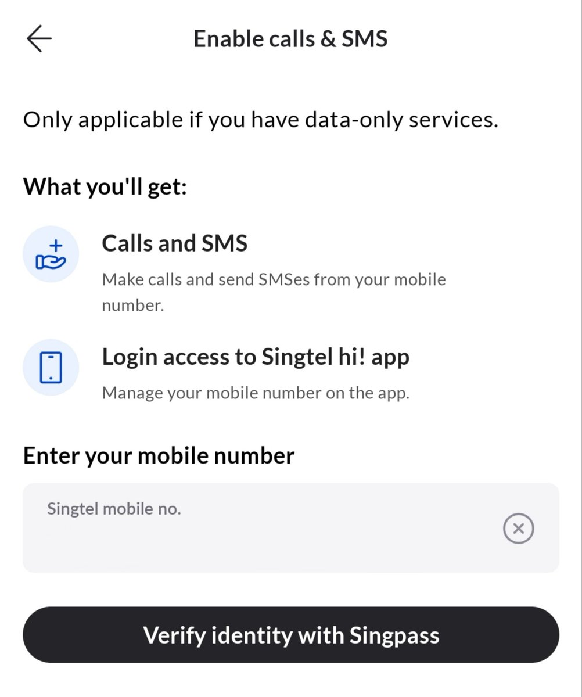
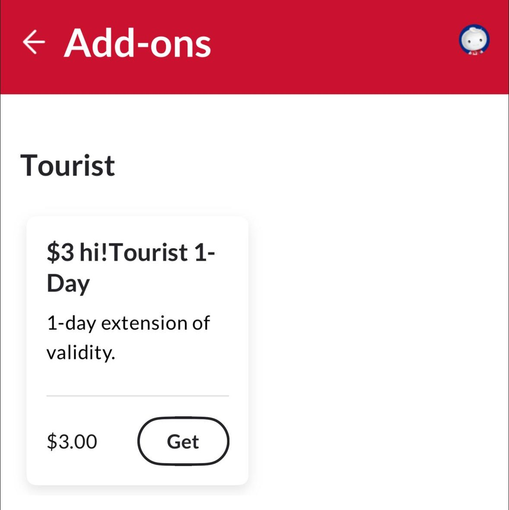
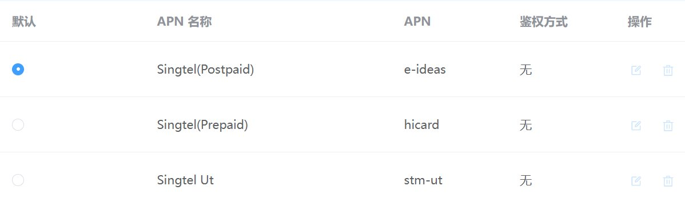

SingTel Prepaid游客配套还不错，如果有原生新加坡IP的用户可以考虑整一个来玩玩，30新币一个月。由于没有SingPass的原因，因此无法激活语音和短信功能，相当于是一张纯数据卡
通过kyc后可激活数据流量，每本护照90天内最多激活3张。虽然可一直续约，但价格是1天3新币不如新开，所以当月抛最好
流量分区域，分别是700GB（SG、MY、ID、TH、HK）+80GB（亚太20个目的地含CN、KR、JP）+8GB全球漫游
默认Prepaid APN（hicard）不仅限速且延迟高，需手动修改为Postpaid用的APN（e-ideas）解除限速，在中国境内可漫游中国移动（CMCC）和中国联通（CHN-UNICOM）
具体用量可通过SingTel的hi!App查询及更换eSIM，对生活在香港、需要AI解锁需求的推友很友好，相比于红茶移动RedteaGO和Trip上的60刀100GB价格划算不少
通过kyc后可激活数据流量，每本护照90天内最多激活3张。虽然可一直续约，但价格是1天3新币不如新开，所以当月抛最好
流量分区域，分别是700GB（SG、MY、ID、TH、HK）+80GB（亚太20个目的地含CN、KR、JP）+8GB全球漫游
默认Prepaid APN（hicard）不仅限速且延迟高，需手动修改为Postpaid用的APN（e-ideas）解除限速，在中国境内可漫游中国移动（CMCC）和中国联通（CHN-UNICOM）
具体用量可通过SingTel的hi!App查询及更换eSIM，对生活在香港、需要AI解锁需求的推友很友好，相比于红茶移动RedteaGO和Trip上的60刀100GB价格划算不少


